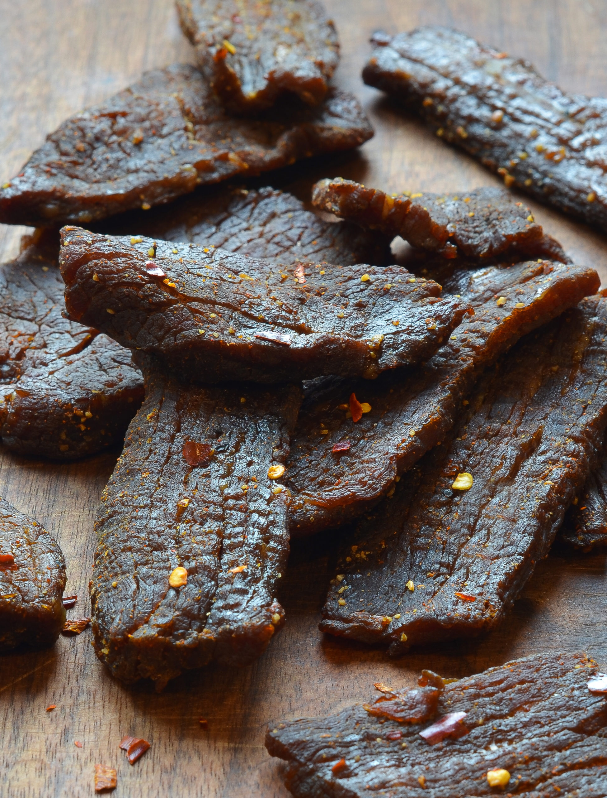

Beef Jerky

Description
Ingredients
Marinade
- ¼ cup low-sodium soy sauce
- 2 tablespoons Worcestershire sauce
- 2 tablespoons liquid smoke
- 2 tablespoons brown sugar
- 2 teaspoons salt
- 1 teaspoon ground black pepper
- 1 teaspoon meat tenderizer
- 1 teaspoon garlic powder
- 1 teaspoon onion powder
- 1 teaspoon ground paprika
Marinade
2 Pounds of beef round steak cut into thin strips
Steps
- Gather all Ingredients
- Prepare the marinade: Combine soy sauce, Worcestershire sauce, liquid smoke, brown sugar, salt, pepper, meat tenderizer, garlic powder, onion powder, and paprika in a glass bowl.
- Place beef strips in a 9x13-inch glass baking dish. Pour marinade over top; toss until evenly coated. Cover and marinate in the refrigerator for 8 hours or overnight.
- Remove beef strips from the bowl and place between two pieces of plastic wrap; pound to 1/8-inch thickness.
- Arrange pounded beef strips in a single layer on the trays of a dehydrator. Dry at the dehydrator's highest setting until jerky is done to your liking, at least 4 hours
- Enjoy!